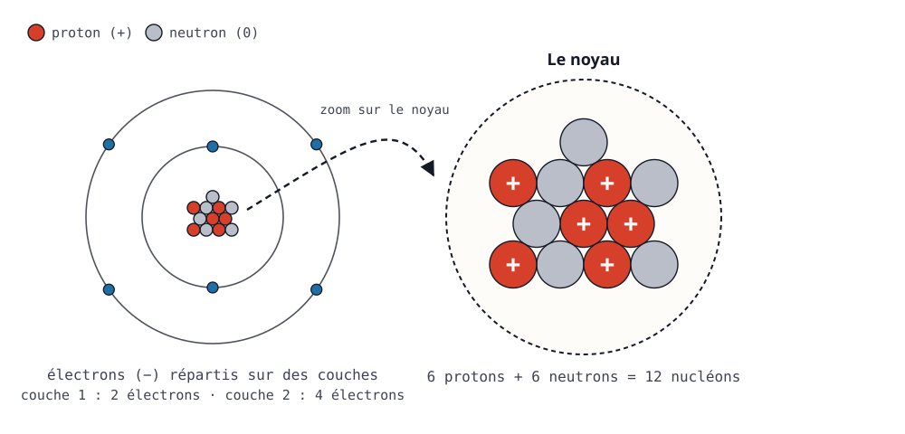
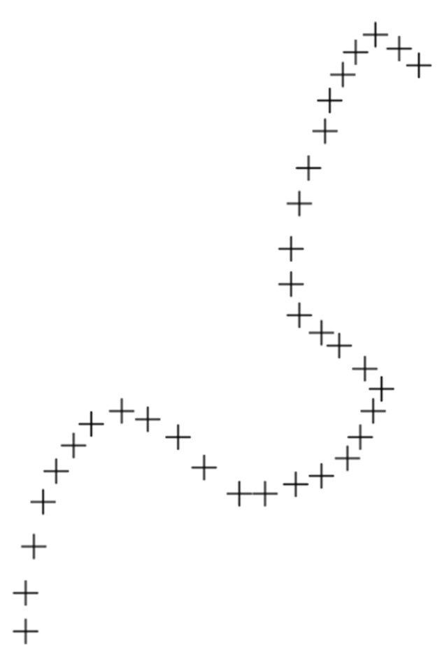
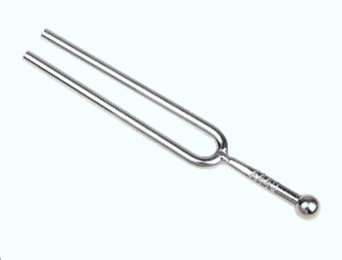

OUTIL 1
Puissances de dix et écriture scientifique
Écrire un nombre sous la forme a × 10n, passer d'un préfixe à l'autre sans compter les zéros, et ne plus se faire piéger par la calculatrice.
Cours · Lycée — 2nde
Toutes les ressources de l'année de seconde, organisées par thème : fiches de cours, exercices, protocoles de TP et évaluations.
Des méthodes que tous les chapitres mobilisent, et qui ne dépendent d'aucune progression : elles sont disponibles toute l'année, dès le premier jour. Chaque outil se lit en ligne, avec ses exercices corrigés, et se colle dans le classeur sous forme de fiche imprimable.
Écrire un nombre sous la forme a × 10n, passer d'un préfixe à l'autre sans compter les zéros, et ne plus se faire piéger par la calculatrice.
Combien de chiffres garder dans un résultat, et pourquoi la règle change selon qu'on a multiplié ou additionné : l'erreur la plus fréquente de l'année.

Reconnaître les espèces chimiques qui nous entourent, et distinguer un corps pur d'un mélange.

Faire fondre du fer ou brûler une bougie : dans un cas la matière change d'état, dans l'autre elle change de nature.

Vingt-cinq siècles pour passer de l'atome insécable de Démocrite au noyau entouré de son cortège d'électrons.

Compter des entités trop petites pour être vues : la mole, l'unité qui fait le pont entre l'atome et la balance.
Dissoudre, diluer, doser : préparer une solution à la concentration voulue, puis retrouver celle d'une solution inconnue.
Là où se logent les électrons d'un atome — et pourquoi cela suffit à expliquer l'ordre du tableau périodique.
Pourquoi les gaz nobles ne réagissent avec rien, et comment tous les autres atomes s'arrangent pour leur ressembler.

Décrire un mouvement suppose d'abord de choisir un référentiel : sans lui, ni trajectoire ni vitesse n'ont de sens.

Représenter par une flèche ce qu'un objet fait subir à un autre — et découvrir qu'il le lui rend toujours.
Un objet ne s'arrête pas parce qu'il n'a plus de force : il s'arrête parce que les forces cessent de se compenser.

D'un objet qui vibre jusqu'à l'oreille qui perçoit : comment un son naît, se propage, et à partir de quel niveau il abîme.
Comment un capteur traduit une température ou une lumière en une tension électrique que l'on sait mesurer.

La lumière blanche cache un arc-en-ciel — et chaque spectre de raies est la signature d'un élément chimique.

Pourquoi un crayon plongé dans l'eau paraît brisé, et pourquoi une route surchauffée semble mouillée.
2nde · révisions d'été
Cahier de vacances — vers la 1re spé
Un diagnostic interactif, jour par jour, pour réviser la Seconde avant la spécialité Physique-Chimie.